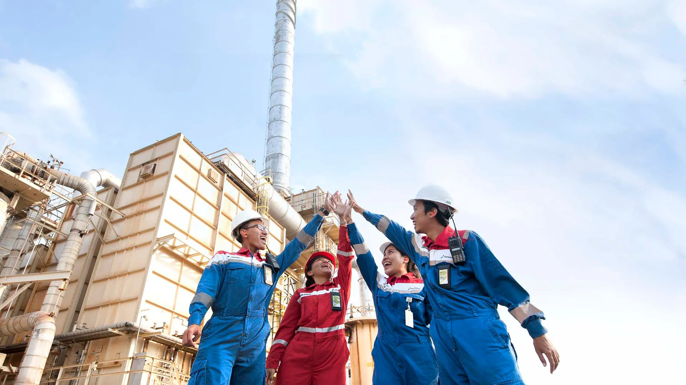

Pengelolaan wilayah lepas pantai barat Madura
Wilayah Kerja West Madura Offshore menjadi bagian dari kegiatan usaha hulu migas di lepas pantai utara Jawa Timur dan barat Madura.

Beranda / Tentang Kami
Mengenal perjalanan, profil, visi, misi, dan komitmen PHE WMO dalam mengelola energi dari wilayah lepas pantai barat Madura.
PT Aroma Operations Services (AOS) didirikan pada tahun 1989 berdasarkan Akta No. 245 tanggal 17 November 1989. AOS merupakan anak perusahaan PT Pertamina (Persero) yang dibentuk untuk mendukung operasional kilang petrokimia di Cilacap, Jawa Tengah. Pada tahun 2002, AOS berganti nama menjadi PT Pertahulu Energy, kemudian pada tahun 2007 menjadi PT Pertamina Hulu Energi (PHE). Perubahan nama tersebut disetujui melalui Akta No. 5 tanggal 4 Agustus 2008 dan berdasarkan Undang-Undang No. 22 Tahun 2001 tentang Minyak dan Gas Bumi (UU Migas).
PT Pertamina (Persero) diwajibkan oleh UU Migas untuk memisahkan kegiatan usaha hulu dan hilir minyak dan gas bumi. PHE diserahi pengelolaan Wilayah Kerja (WK) hulu yang sebelumnya dikelola oleh PT Pertamina (Persero) bekerja sama dengan pihak ketiga melalui Badan Operasi Bersama (BOB) dan Participating Interest (PI). Penyerahan tersebut diikuti dengan pengalihan operasi blok minyak dan gas bumi kepada anak-anak perusahaan PHE, sebagaimana disetujui oleh Direksi PT Pertamina (Persero) pada 18 September 2007 dan Dewan Komisaris PT Pertamina (Persero) pada 6 November 2007. PHE ditugaskan mengelola WK minyak dan gas bumi milik PT Pertamina (Persero).
Sejalan dengan pembentukan PT Pertamina (Persero) sebagai induk usaha (holding) minyak dan gas bumi, PHE ditunjuk sebagai Subholding Upstream pada tahun 2021, berdasarkan Surat Keputusan Direksi No. Kpts-19/C0000/2020-50 tanggal 16 Juni 2020. PHE mengakuisisi seluruh saham milik PT Pertamina (Persero) pada 11 (sebelas) Anak Perusahaan Hulu PT Pertamina sesuai dengan Keputusan Sirkuler Pemegang Saham tanggal 1 September 2021 tentang Pelaksanaan Pembentukan Subholding Hulu (Legal End State). PHE Subholding Upstream mengelola Wilayah Kerja secara regional dengan mempertimbangkan faktor-faktor seperti volume produksi, geografi wilayah, dan kompleksitas operasional. PHE Subholding Upstream berperan sebagai perencana, validator, dan pembuat kebijakan, sedangkan Regional berfokus sebagai pengoptimal dan integrator, serta meningkatkan keselamatan, produksi, dan cadangan minyak dan gas bumi. Hingga akhir tahun 2021, PHE Subholding Upstream terdiri atas 68 Anak Perusahaan. Selain itu, PHE memiliki 6 (enam) perusahaan patungan (joint venture).
Wilayah Kerja PHE Subholding Upstream terbagi menjadi 5 (lima) Regional, yang masing-masing mencakup 40 Wilayah Kerja Domestik yang terdiri atas 27 blok operator dan 13 blok non-operator, serta 27 Wilayah Kerja Internasional yang tersebar di 13 negara di Asia Tenggara, Afrika, Eropa, dan Timur Tengah.

Perjalanan perusahaan
Perjalanan pengelolaan Wilayah Kerja West Madura Offshore dan peran PHE WMO dalam mendukung kebutuhan energi.
Wilayah Kerja West Madura Offshore menjadi bagian dari kegiatan usaha hulu migas di lepas pantai utara Jawa Timur dan barat Madura.
PHE WMO mulai menjalankan peran sebagai operator Kontraktor Kontrak Kerja Sama (KKKS) di Wilayah Kerja West Madura Offshore.
Operasi dijalankan melalui fasilitas offshore dan Onshore Receiving Facility di Gresik, dengan fokus pada keselamatan, keandalan produksi, efisiensi, dan keberlanjutan.
Periode kontrak Wilayah Kerja WMO tercantum berlaku hingga 6 Mei 2031 pada materi profil project ini.
Menjadi Perusahaan Minyak dan Gas Bumi Kelas Dunia.
Memaksimalkan potensi migas West Madura Offshore melalui operasi yang aman dan andal, memberikan manfaat bagi para pemangku kepentingan.
Nilai inti perusahaan, bersama prinsip HSSE dan tata kelola perusahaan yang baik (GCG).